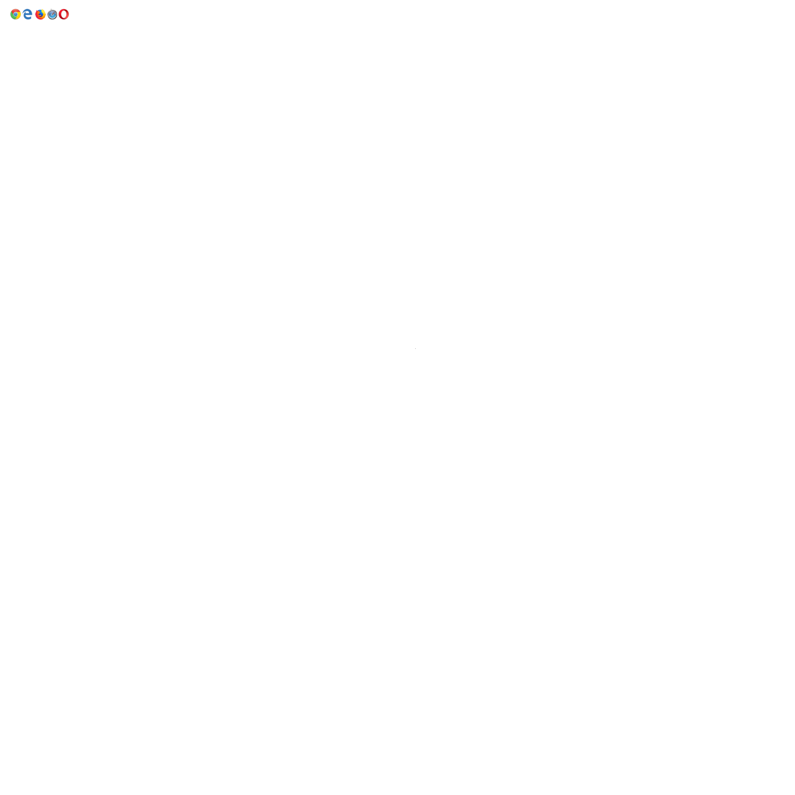

HTML 5 семантичні елементи
Семантичний елемент чітко описує його значення як для браузера, так i для розробника.
Приклади не семантичних елементів: div i span - нічого не говорить про його вміст.
Приклади семантичних елементів: form, table i article- чітко визначає його зміст.
Підтримка браузерів

Семантичні елементи HTML5 підтримуються y всіх сучасних браузерах.
Крім того, ви можете "навчити" старих браузерів, як обробляти "невідомі елементи".
Прочитайте про це в в підтримці браузера HTML5
Нові семантичні елементи в HTML5
HTML5 пропонує нові семантичні елементи для визначення різних частин веб-сторінки:
- section
- article
- header
- footer